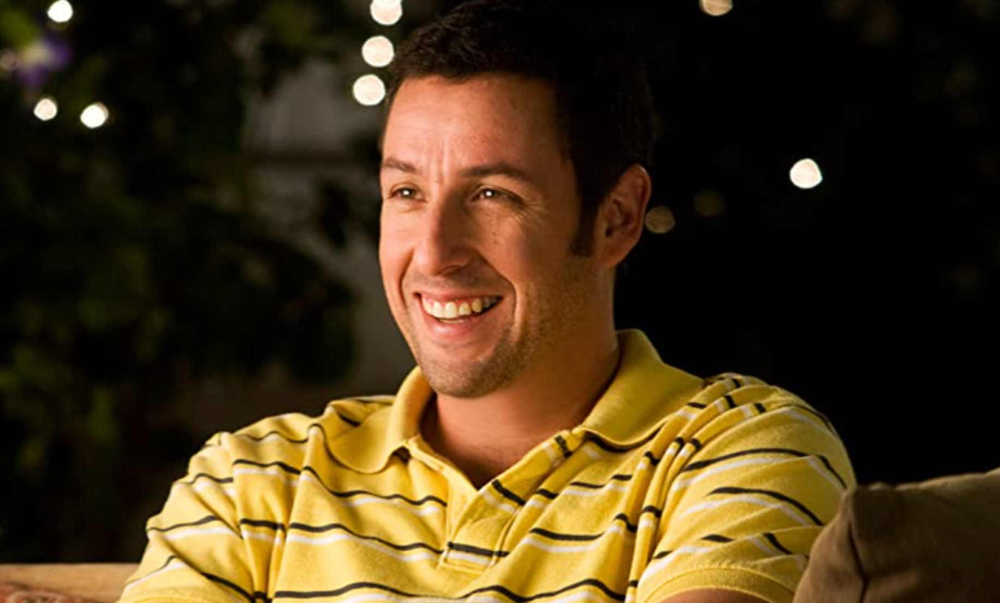
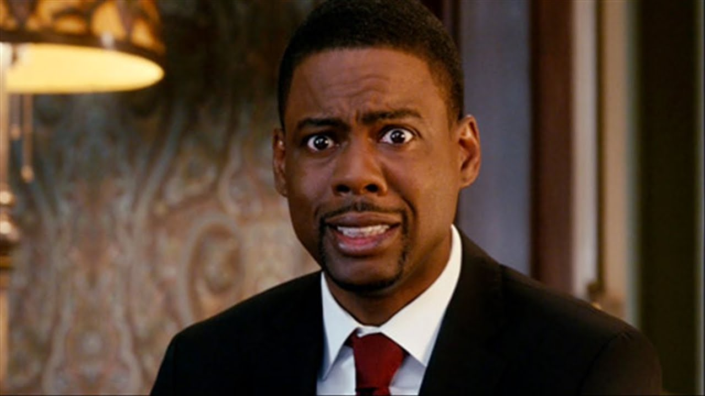
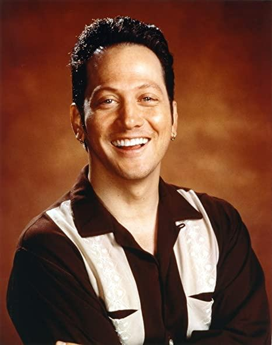
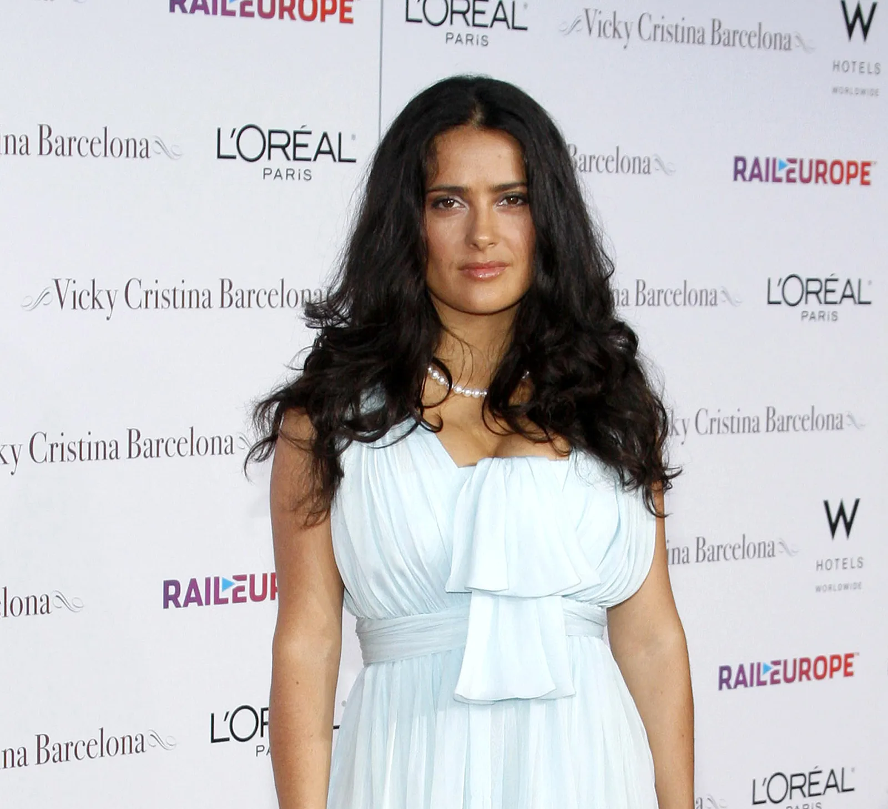
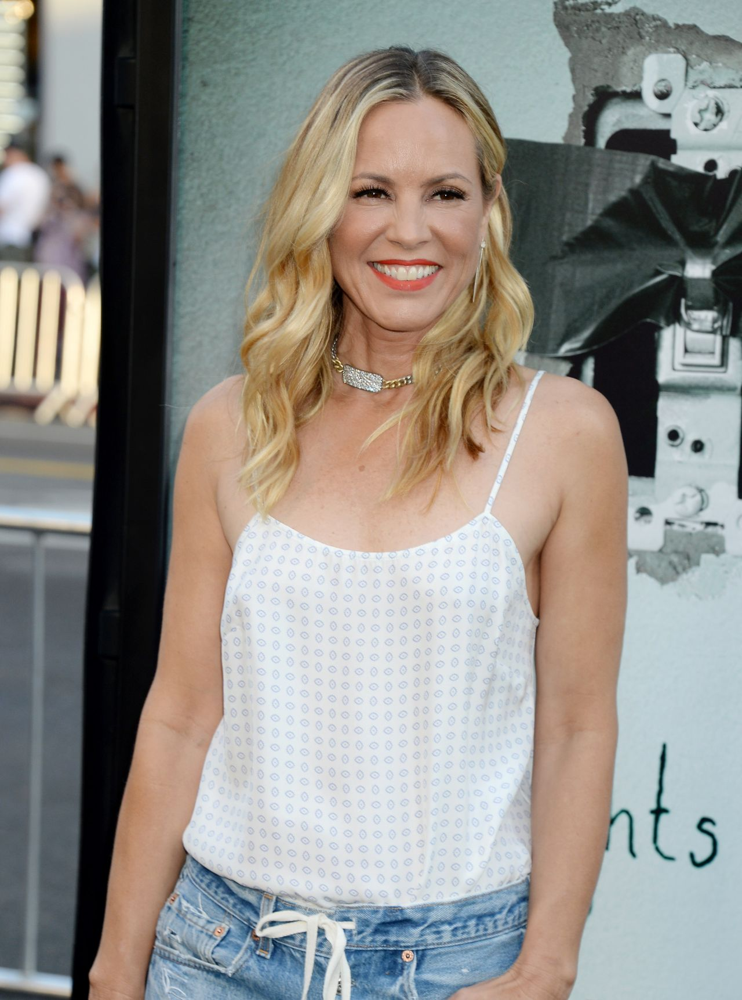

-
- Adam Sandler: Lenny Fader
- Es el protagonista, Interpreta a un agente de Hollywood exitoso que vuelve a su pueblo natal.

-
- Kevin James: Eric Lamonsoff
- Un padre de familia inseguro, su papel aporta mucho humor fisico y su personaje demuestra que todavia puede ser divertido

-
- Chris Rock: Kurt Mckenzi
- Interpreta a un hombre trabajador con muchos hijos y muestra el lado mas realista de la vida familiar

-
- Rob Schneider: Rob Hilliard
- Es un hombre que vive con su esposa mayor y su estilo de vida es muy diferente a la del grupo

-
- David Spade: Marcus Higgins
- el soltero del grupo y inmaduro, su personaje genera muchas situaciones incomodas y comicas

-
- Salma Hayek: (Esposa de Lenny)
- Es la esposa de lenny y representa el contraste entre la vida sostificada de la ciudad y la sencillez del pueblo

-
- Maria Bello: Sally Lamonsoff (Esposa de Eric)
- Es la esposa de Eric, es una madre protectora y algo controladora con sus hijos

-
- Maya Rudolph: (Esposa de Kurt)
- Es la esposa de Kurt tiene un caracter fuerte, directa y muy expresiva